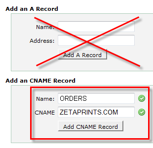

<?xml version="1.0" encoding="UTF-8"?><rss version="2.0"
	xmlns:content="http://purl.org/rss/1.0/modules/content/"
	xmlns:wfw="http://wellformedweb.org/CommentAPI/"
	xmlns:dc="http://purl.org/dc/elements/1.1/"
	xmlns:atom="http://www.w3.org/2005/Atom"
	xmlns:sy="http://purl.org/rss/1.0/modules/syndication/"
	xmlns:slash="http://purl.org/rss/1.0/modules/slash/"
	>

<channel>
	<title>Branding &#8211; Magento web-to-print &amp; dynamic imaging</title>
	<atom:link href="http://www.zetaprints.com/magentohelp/tag/branding/feed/" rel="self" type="application/rss+xml" />
	<link>http://www.zetaprints.com/magentohelp</link>
	<description>Just another WordPress site</description>
	<lastBuildDate>Fri, 07 Jun 2013 06:55:21 +0000</lastBuildDate>
	<language>en-US</language>
	<sy:updatePeriod>hourly</sy:updatePeriod>
	<sy:updateFrequency>1</sy:updateFrequency>
	<generator>https://wordpress.org/?v=4.4.1</generator>
	<item>
		<title>10. Set up your domain</title>
		<link>http://www.zetaprints.com/magentohelp/set-up-your-domain/</link>
		<pubDate>Thu, 01 Jul 2010 09:54:27 +0000</pubDate>
		<dc:creator><![CDATA[admin]]></dc:creator>
				<category><![CDATA[Web-to-print installation]]></category>
		<category><![CDATA[Branding]]></category>
		<category><![CDATA[Custom domain]]></category>
		<category><![CDATA[Subdomain]]></category>

		<guid isPermaLink="false">http://www.zetaprints.com/help/?p=10343</guid>
		<description><![CDATA[Step 9 Step 10 &#8211; Set up your domain Step 11 Web-to-print portals running on ZetaPrints web-to-print and dynamic imaging platform need to be placed under custom domain names to get full functionality and API access. Custom domain Your web-to-print portal (ZetaPrints site) must have a custom domain set up before you can set up [&#8230;]]]></description>
				<content:encoded><![CDATA[<table class="m_install_nav">
<tbody>
<tr>
<td class="m_install_prev"><a title="Step 9 - Register a master account" href="../../../register-a-master-account/" target="_self">Step 9</a></td>
<td class="m_install_cur"><strong>Step 10</strong> &#8211; Set up your domain</td>
<td class="m_install_next"><a title="Step 11 - Configure product attributes" href="../../../configure-product-attributes/" target="_self">Step 11</a></td>
</tr>
</tbody>
</table>
<p>Web-to-print portals running on ZetaPrints <a title="ZetaPrints  web-to-print" href="../../../../" target="_self">web-to-print</a> and <a title="ZetaPrints dynamic  imaging" href="../../../../help/category/banners/" target="_self">dynamic imaging</a> platform need to be placed under custom domain names to get full functionality and <a title="Web-to-print API" href="../../../../help/category/api/" target="_self">API</a> access.<span id="more-10343"></span></p>
<h2>Custom domain</h2>
<p>Your web-to-print portal (ZetaPrints site) must have a <a title="Web-to-print custom domain names" href="../../../../help/domain-name-set-up/" target="_self">custom domain</a> set up before you can set up your Magento web-to-print store.</p>
<h3>Register new domain or create a subdomain</h3>
<p>The process is different between domain name registrars and Internet Service Providers (ISPs). They may have what is called a <em>Control Panel</em> or <em>CPanel</em> where you can manage your domain names yourself or you may need to send them a request to do it from their end.</p>
<h3>Point your domain / subdomain at zetaprints.com</h3>
<div style="display: table;">
<p></p>
<div style="position: relative; top: 15px; display: inline;">A domain name needs to be set up as a <strong>CNAME</strong> record pointing at <em>zetaprints.com</em>. Type in ZETAPRINTS.COM into CNAME text box and make sure there no A-records for the same domain/subdomain. This option should be available in your hosting account <strong>Control Panel</strong>. Contact the support of your domain name registrar to set it up for you, if you don’t know where or how.</div>
</div>
<p>Read more about <a title="Web-to-print custom access URL" href="../../../../help/custom-access-url/" target="_self">custom access URLs</a>.</p>
<h2>API key</h2>
<p>As soon as you have a custom domain set for your web-to-print portal, you can proceed to <a title="How to generate and use your web-to-print API key" href="../../../../help/how-to-get-api-key/" target="_self">generate and use</a> your unique API key.</p>
<table class="m_install_nav">
<tbody>
<tr>
<td class="m_install_prev"><a title="Step 9 - Register a master account" href="../../../register-a-master-account/" target="_self">Step 9</a></td>
<td class="m_install_cur"><strong>Step 10</strong> &#8211; Set up your domain</td>
<td class="m_install_next"><a title="Step 11 - Configure product attributes" href="../../../configure-product-attributes/" target="_self">Step 11</a></td>
</tr>
</tbody>
</table>
]]></content:encoded>
			</item>
	</channel>
</rss>

<!-- Localized -->